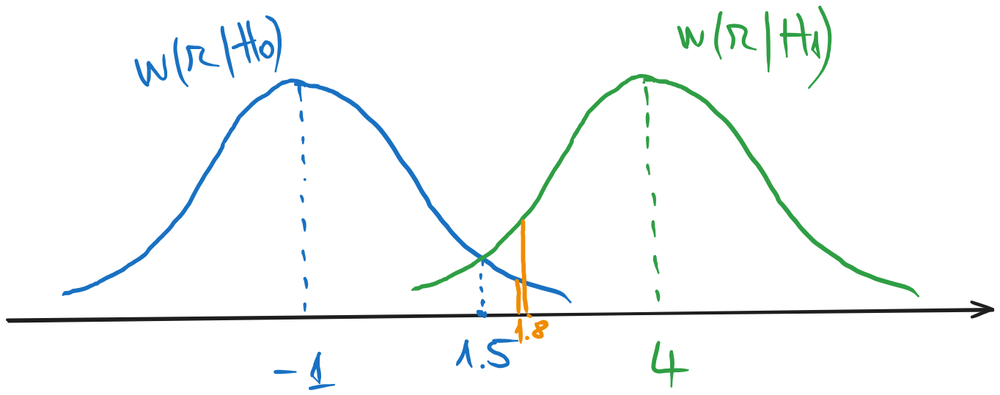

10 Seminar 03: Criteriul de decizie Maximum Likelihood
\[ \newcommand{\grtlessH}{\underset{{H_0}}{\overset{H_{1}}{\gtrless}}} \renewcommand{\vec}[1]{\mathbf{#1}} \]
10.1 Exercițiul 1
Fie detecția între două semnale constante, \(s_0(t) = -1\) și \(s_1(t) = 4\). Semnalele sunt afectate de zgomot alb cu distribuția \(\mathcal{N}\;(\mu=0, \sigma^2=4)\). Receptorul ia un singur eșantion la momentul \(t_0 = 0.75\), și valoarea obținută este \(r = 1.8\).
- a). Scrieți expresiile celor două distribuții condiționate și reprezentați-le
- b). Ce decizie se ia cu criteriul Maximum Likelihood?
Rezolvare
a). Dacă suntem în situația \(H_0\), atunci eșantionul va fi \(r = -1 + zgomot\), ceea ce înseamnă ce distribuția lui \(r\) în cazul \(H_0\) este distribuția zgomotului dar centrată în \(-1\), adică \(\mathcal{N}(\mu=-1, \sigma^2=4)\).
În ipoteza \(H_1\), eșantionul va fi \(r = 4 + zgomot\),, așadar distribuția sa va fi \(\mathcal{N}(\mu=4, \sigma^2=4)\).

Cunoscând expresia generală a unei distribuții normale: \[w(x) = \frac{1}{\sigma \sqrt{2 \pi}} e^{-\frac{(x-\mu)^2}{2 \sigma^2}}\] putem scrie așadar expresiile celor două distribuții condiționate: \[w(r|H_0) = \frac{1}{2 \sqrt{2 \pi}} e^{-\frac{(r+1)^2}{8}}\] \[w(r|H_1) = \frac{1}{2 \sqrt{2 \pi}} e^{-\frac{(r-4)^2}{8}}\]
b). Confirm criteriului Maximum Likelihood, decizia luată pentru un eșantion de valoare \(r = 1.8\) este dată de distribuția care are valoarea mai mare în dreptul acestui punct \(r = 1.8\).
Din figură, se observă că \(r=1.8\) se află la dreapta punctului de intersecție dintre cele două distribuții, situat la mijlocul distanței dintre \(-1\) și \(4\), adică \(1.5\). Așadar pentru \(r = 1.8\) mai înaltă este distribuția \(w(r|H_1)\), deci decizia este \(D_1\): \[w(r|H_1) > w(r|H_0)\Biggr|_{\substack{r=1.8}} \Rightarrow D_1\]
10.2 Exercițiul 2
Fie detecția între două semnale, \(s_0(t) = \cos(2 \pi t)\) și \(s_1(t) = \sin(2 \pi t)\).
Semnalele sunt afectate de zgomot alb cu distribuția \(\mathcal{N}(\mu=0, \sigma^2=2)\).
Receptorul ia un singur eșantion la momentul \(t_0 = 0.75\), și valoarea obținută este \(r(t_0) = 3.5\).
Cerințe:
- a). Reprezentați grafic cele două distribuții condiționate și scrieți-le expresia matematică
- b). Ce decizie se ia conform criteriului Maximum Likelihood?
- c). Găsiți regiunile de decizie
- d). Calculați probabilitățile condiționate ale celor 4 scenarii (rejecție corectă, alarmă falsă, pierdere, detecție corectă)
- e). Care ar fi cel mai bun moment \(t_0\) de eșantionare, pentru a decide între semnale? Justificați
- f). Care ar fi cel mai rău moment \(t_0\) de eșantionare, pentru a decide între semnale? Justificați
- g). Repetați a) și b) dacă zgomotul are distribuție uniformă \(\mathcal{U}[-4,4]\). Există valori pentru care nu se poate lua o decizie?
- h). Care este varianța maximă a unui zgomot uniform, cu media 0, pentru care se poate lua o decizie cu criteriul ML pentru \(r = 3.5\)?
Rezolvare
La momentul \(t_0 = 0.75\), semnalele originale au valoarea sunt \(s_0(t_0) = \cos(2 \pi 0.75) = 0\) și \(s_1(t_0) = \sin(2 \pi 0.75) = -1\). Prin urmare, în cazul \(H_0\) eșantionul va urma o distribuție normală în jurul lui \(0\), iar în cazul \(H_1\) o distribuție normală în jurul lui \(-1\): \[H_0: \mathcal{N}(\mu=0, \sigma^2=2)\] \[H_1: \mathcal{N}(\mu=-1, \sigma^2=2)\]
Expresiile și reprezentarea grafică a acestor distribuții sunt prezentate mai jos: \[w(r|H_0) = \frac{1}{\sqrt{4 \pi}} e^{-\frac{r^2}{4}}\] \[w(r|H_1) = \frac{1}{\sqrt{4 \pi}} e^{-\frac{(r+1)^2}{4}}\]
Se observă că distribuția din stânga este acum \(w(r|H_1)\), iar cea din dreapta \(w(r|H_0)\).
b). Conform criteriului Maximum Likelihood, pentru \(r = 3.5\) decizia este corespunzătoare distribuției mai înalte în acel punct, adică \(D_0\).
c). Regiunea de decizie \(R_0\) cuprinde valorile \(r\) pentru care se ia decizia \(D_0\), adică intervalul în care funcția \(w(r|H_0)\) este mai înaltă decât \(w(r|H_1)\): \[R_0 = (-0.5, \infty)\]
Regiunea de decizie \(R_1\) cuprinde valorile \(r\) pentru care se ia decizia \(D_1\), adică intervalul în care funcția \(w(r|H_1)\) este mai înaltă: \[R_1 = (-\infty, 0.5-)\]
d). Cele patru probabilități corespund celor patru zone reprezentate în figura de mai jos. Fiecare distribuție dă naștere la două probabilități, integrând pe cele două regiuni de decizie.
Cele patru arii reprezintă integrale din niște funcții de distribuție normale, care se pot calcula cu funcția de repartiție \(F(x)\). Așadar: \[\begin{aligned} P_{rc} &= P(D_0|H_0) = \int_{R_0} w(r|H_0) dr \\ &= F_{H_0}(\infty) - F_{H_0}(-0.5) \\ &= 1 - \frac{1}{2}\left(1 + erf \left(\frac{-0.5 - 0}{\sqrt{2}\sqrt{2}}\right)\right) = 0.638 \end{aligned}\] \[\begin{aligned} P_{af} &= P(D_1|H_0) = \int_{R_1} w(r|H_0) dr \\ &= F_{H_0}(-0.5) - F_{H_0}(-\infty) \\ &= \frac{1}{2}\left(1 + erf \left(\frac{-0.5 - 0}{\sqrt{2}\sqrt{2}}\right)\right) = 0.362 \end{aligned}\] \[\begin{aligned} P_{p} &= P(D_0|H_1) = \int_{R_0} w(r|H_1) dr \\ &= F_{H_1}(\infty) - F_{H_1}(-0.5) \\ &= 1 - \frac{1}{2}\left(1 + erf \left(\frac{-0.5 + 1}{\sqrt{2}\sqrt{2}}\right)\right) = 0.362 \end{aligned}\] \[\begin{aligned} P_{dc} &= P(D_1|H_1) = \int_{R_1} w(r|H_1) dr \\ &= F_{H_1}(-0.5) - F_{H_1}(-\infty) \\ &= \frac{1}{2}\left(1 + erf \left(\frac{-0.5 + 1}{\sqrt{2}\sqrt{2}}\right)\right) = 0.638 \end{aligned}\]
e). Cel mai bun moment de eșantionare, în vederea deciziei, este acela în care semnalele originale sunt cît mai diferite între ele. În cazul nostru, semnalele \(s_0(t)\) și \(s_1(t)\), sinus și cosinus, sunt reprezentate în figura următoare.
Frecvența semnalelor este \(f=1\), deci perioada acestora este \(T = 1/f = 1\).
Diferența maximă între semnale se obține în dreptul valorilor \(t = 0.375\) și \(t = 0.875\), deci acestea sunt cele mai bune momente de eșantionare.
f). Cel mai rău moment de eșantionare în vederea deciziei este acela în care semnalele originale sunt cît mai apropiate între ele. În cazul nostru, semnalele au aceeași valoare la momentele de timp \(t = 0.125\) și \(t = 0.625\), prin urmare acestea sunt cele mai nepotrivite moment de eșantionare.
g). Dacă zgomotul are distribuție uniformă \(\mathcal{U}[-4,4]\), atunci distribuțiile condiționate sunt cele de mai jos.
\[w(r|H_0) = \mathcal{U}[-4,4]\] \[w(r|H_1) = \mathcal{U}[-5,3]\]
Se observă suprapunerea lor pe intervalul \([-4,3]\), ceea ce înseamnă că pentru toate valorile din acest interval nu se poate lua o decizie cu criteriul Maximum Likelihood (indecizie).
Pentru valoarea \(r = 3.5\), decizia este \(D_0\), deoarece distribuția \(w(r|H_0)\) este mai înaltă în acel punct.
h). În condițiile de la punctul g), pentru \(r = 3.5\) decizia luată cu criteriul ML este \(D_0\). Întrebarea este: dacă creștem varianța zgomotului (distribuțiile devin mai late), la ce moment nu mai putem lua o decizie?
Ajungem la indecizie atunci când ambele distribuții devin egale în punctul \(r = 3.5\), adică atunci când distribuția \(w(r|H_1\) se va întinde până la \(r = 3.5\), așadar va fi o disribuție uniformă \(\mathcal{U}[-5.5,3.5]\), centrată pe pucntul \(-1\) și de lățime totala egală cu \(9\).
Trebuie să calculăm varianța acestei distribuții (care este egală cu varianța zgomotului) pentru acest caz limită. Pentru varianță contează doar lățimea distribuției, nu și centrul ei, așadar putem considera distribuția centrată pe \(0\) și de lățime \(9\), \(\mathcal{U}[-4.5,4.5]\). Avem: \[\sigma^2 = \int_{-4.5}^{4.5} (x - 0)^2 \frac{1}{9} dx = \frac{1}{9} \cdot \frac{x^3}{3} \Biggr|_{-4.5}^{4.5} = \frac{1}{9} \cdot \frac{4.5^2 \cdot 2}{3} = 1.5\]